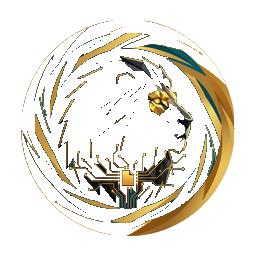

AmoralChecker
ASTRUM · anti-cheat tool
Инструмент для проверки ПК на запрещённое ПО и модификации Minecraft.
Скачайте и запустите — код доступа вам сообщит администратор.
⬇ Скачать AmoralChecker.exe
При первом запуске Windows может показать предупреждение
(«Неизвестный издатель») — это нормально, нажмите
«Подробнее» → «Выполнить в любом случае».